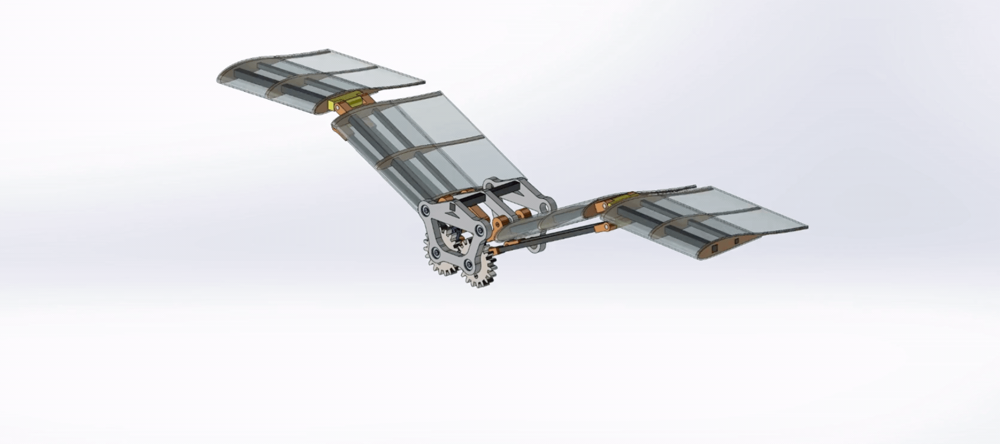
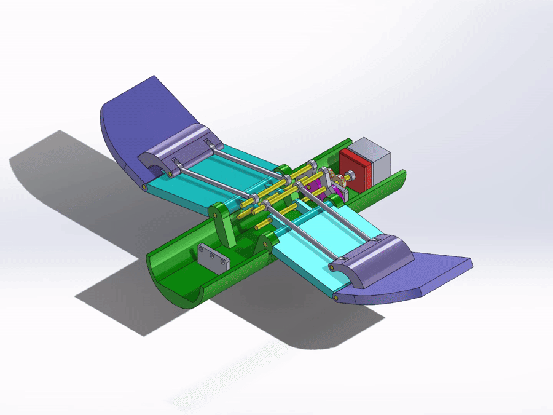
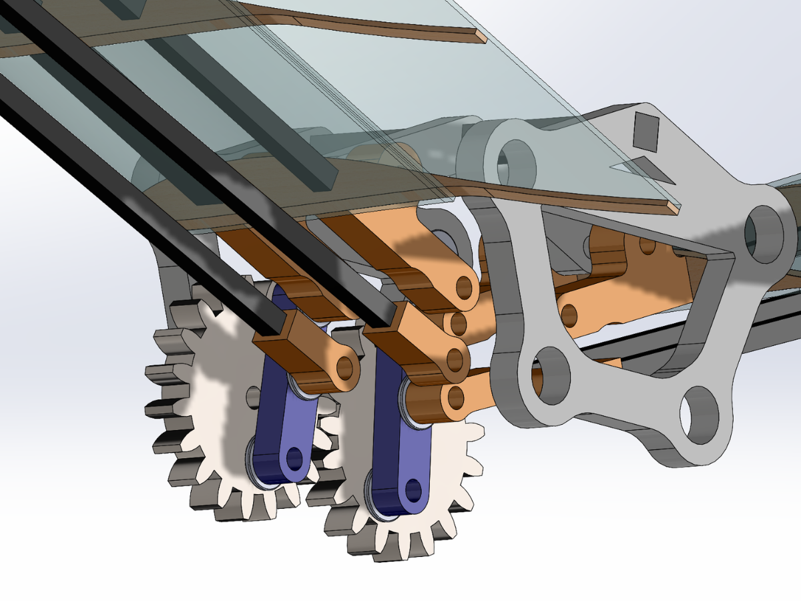
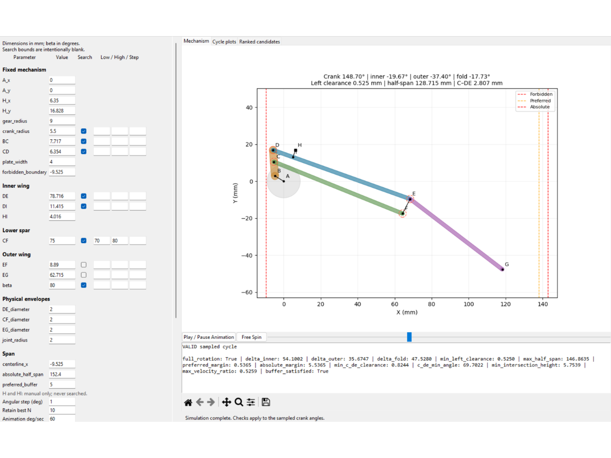
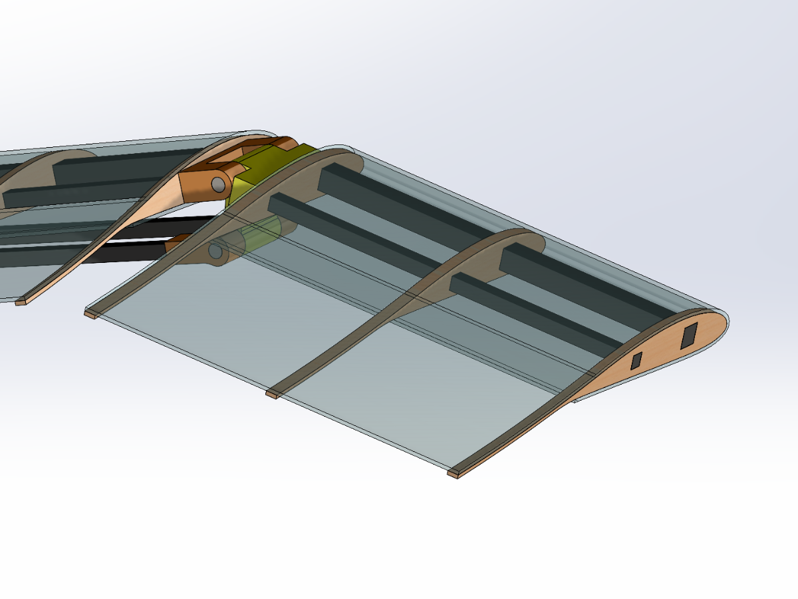

01 / Early concept
Joint-Mounted Gearing
Gears at the articulated joints offered direct segment control, but potential gear loading, added weight, and mechanical complexity made this approach less attractive.
01 / Mechanisms / Mechanical design
Development of a compact, multi-segment flapping-wing mechanism designed for synchronized actuation, glide capability, and wind-tunnel testing.

THE CHALLENGE
Develop a compact flapping-wing system that converts continuous motor rotation into synchronized, bird-like wing motion within a 12-inch total wingspan. The mechanism must coordinate multiple articulated segments, accommodate a future glide-lock mode, remain manufacturable, and support planned wind-tunnel testing.
MY ROLE
DESIGN & DEVELOPMENT
PROCESS / 01 — Concept Development
Early concepts explored gearing at the wing joints and separate brushless and servo-and-pulley actuation for the inner and outer segments. Gear loading, added mass, and the complexity of coordinating multiple actuators motivated a simpler architecture.
The design evolved toward a single motor with mechanically coupled wings. A crank-linkage system converts rotation into oscillatory motion, while spars transmit motion to the outer segments for synchronous left-right flapping.

PROCESS / 02 — Drivetrain & Synchronous Flapping
The current drivetrain uses paired gears and crank links to convert continuous motor rotation into reciprocating wing motion. Mechanical coupling synchronizes both wings without independent actuator control.
Linkage geometry determines flapping amplitude and motion through the wing structure. Gear placement, crank geometry, joint locations, and packaging are central to the design.

PROCESS / 03 — Kinematic Analysis
I developed a custom mechanism-analysis tool to evaluate linkage geometry before committing to hardware. It simulates a complete crank rotation and allows geometric parameters to be adjusted while monitoring motion and packaging constraints.
Candidate geometries can be checked for wing travel, maximum span, joint clearance, and linkage interference. This supports faster dimensional iteration before rebuilding the complete CAD assembly or fabricating parts.

PROCESS / 04 — Wing Geometry & Airfoil Integration
NACA 4415 is the selected baseline structural and aerodynamic profile for investigating a segmented flapping-wing architecture.
An extended trailing region draws inspiration from bird-wing feathers. Integrating this shape requires balancing spar placement, joint packaging, manufacturability, and total span.

PROCESS / 05 — Packaging & Manufacturing
The 12-inch total wingspan constrains linkage placement, spar routing, joint geometry, and drivetrain packaging. CAD iterations focus on interference, shaft and joint clearances, structural support, and manufacturable geometry.
The material and process plan combines lightweight wing structures, carbon-fiber spars, additively manufactured joints and mechanism components, and laser-cut parts where appropriate. Fabrication will begin after geometry, clearance, and tolerance reviews are finalized.

DESIGN EVOLUTION
01 / Early concept
Gears at the articulated joints offered direct segment control, but potential gear loading, added weight, and mechanical complexity made this approach less attractive.
02 / Intermediate concept
Brushless inner-wing actuation and servo-driven outer wings offered independent control. Synchronizing multiple actuators increased control and packaging complexity.
03 / Current approach
One primary drivetrain produces bilateral flapping and transmits motion through spars and linkages, making synchronization a mechanical property of the system.
TECHNICAL HIGHLIGHTS
Nominal design point: 6 Hz
ANALYSIS & VALIDATION
Preliminary CFD work has established an analysis workflow around NACA 4415. The custom linkage tool and CAD interference checks evaluate motion and physical clearances across the flapping cycle.
Physical testing is planned and has not occurred. After fabrication, the mechanism is intended for campus wind-tunnel testing with controlled airspeed and angle-of-attack sweeps, comparing recorded aerodynamic and mechanism-response data with the analysis workflow.
CURRENT STATUS
The flapping architecture, synchronized drivetrain concept, segmented wing layout, and baseline airfoil geometry are established. Linkage dimensions, tolerances, joint geometry, and component packaging are being refined.
Physical parts have not yet been ordered or assembled. Fabrication, bench testing, and wind-tunnel validation remain future work.